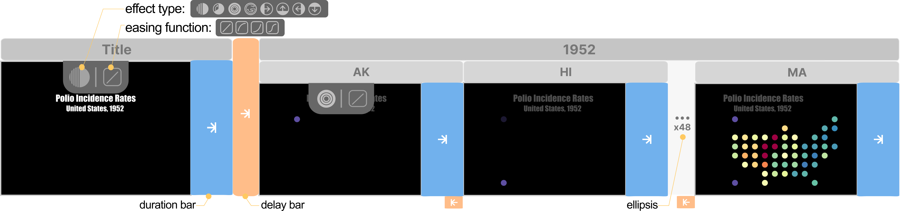
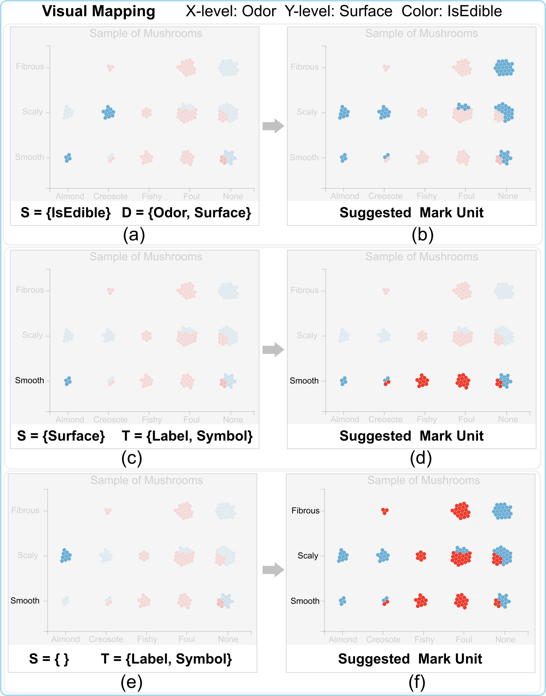

Authoring Data-Driven Chart Animations
Yuancheng Shen, Yue Zhao, Tong Ge, Haoyan Shi, Bongshin Lee, Yunhai Wang
Figure 1: CAST+ enables the interactive construction of a variety of chart animations. Its interface consists of four panels: (a) data panel; (b) chart panel; (c) animation panel; and (d) keyframe panel. In this case, the system is about halfway through the animation of a 'bar chart', showing the distribution of the population by gender in different age groups. Please visit the CAST+'s website ( https://canisstudio.github.io/CASTPlus) to see the animation.
Abstract
We present an authoring tool, called CAST+ (Canis Studio Plus), that enables the interactive creation of chart animations. It introduces the visual specification of chart animations consisting of keyframes that can be played sequentially or simultaneously, and animation parameters (e.g., duration, delay). Building on Canis, a declarative chart animation grammar that leverages data-enriched SVG charts, CAST+ supports auto-completion for constructing both keyframes and keyframe sequences. It also enables users to refine the animation specification (e.g., aligning keyframes across tracks to play them together, adjusting delay) with direct manipulation and other parameters for animation effects (e.g., animation type, easing function) using a control panel. We report a user study conducted to assess the visual specification and system usability with its initial version. We enhanced the system's expressiveness and usability: CAST+ now supports the animation of multiple types of visual marks in the same keyframe group and the binding of data attributes to animation timing properties, and provides more consistent user interactions. We present a gallery of examples and four usage scenarios to demonstrate the expressiveness of CAST+. Finally, we discuss the limitations, comparison, and potentials of CAST+ as well as directions for future research.
Visual Specifications

Figure 2: The visual representation of the animation of a map showing the polio incidence rates of the United States in 1952. The title fades in first, then all dots animate according to their rate in an ascending order with the Circle effect. Such animation is represented by two keyframe groups with other animation properties including timing bars indicating delay, and iconic representation of effect type and easing function (all effect types and easing functions are listed at the top left).
User Interface and Interaction

Figure 3: An example illustrating the keyframe and keyframe sequence construction procedure. (a) a tick label is dragged over the dropzone ahead of the keyframe group containing visual marks; (b) after creating a keyframe for the selected label, a list of possible next keyframes is suggested to let the author select to complete the keyframe sequence; (c) dragging one keyframe to make keyframes animate a short time after the previous one started; (d) binding quantitative data attributes to the start time or duration of the keyframes and rearranging the animation order of sibling keyframe groups; (e) selecting effect type for keyframe group; and (f) two ways to update the duration length.
Linked interactions between suggested keyframes and the chart panel
Figure 4: Illustration of the user interaction workflow in CAST+, highlighting the sequence of steps and interactions involved in crafting an animation. Initially, the system presents potential next keyframes to the user, enabling a preview of the suggestion by hovering over it (a). Subsequently, the user can select specific marks within the desired next keyframe to guide the system's suggestions (b). Following this, the system automatically refreshes the recommendation list (c).
Data-driven Timing Specification

Figure 5: A visual demonstration of how to adjust timing attributes within CAST+. Specifically, (a) displays the foundational data table used for creating the Gantt chart. Then, (b) shows the process of arranging the keyframes by utilizing the Total data attribute. Lastly, (c) illustrates linking the start time and duration to specific data attributes.
Type-aware Keyframes Auto-completion

Figure 6: CAST suggests additional marks to be selected based on the user-selected multiple types of marks from the input chart. In the original version, once (a) two dot cells in blue from different rows are selected, the system suggests (b) all dot cells in the blue color based on the same and different attribute values. In the newer version, selecting (c) a label in the y-axis and one dot cell from the bottom row results in the system highlighting (d) all dots and the associated label in that row by using the type names of the selected marks. When (e) a label in the y-axis and a dot cell from two distinct rows are chosen, the system suggests (f) all dot cells and y-axis labels.
Next Keyframe Recommendation

Figure 7: Illustrating the keyframe sequence auto-completion process with CAST+. (a) The entire sequence of user selection and the system's recommendation involved in authoring the animation in Scenario 4, where the selected keyframe is indicated by a mouse icon; (b, c) the procedure for computing the suggested next keyframes, where the mark units in all recommended keyframes consist of the same type of visual marks in (b) or different types in (c).
Nested Selection with Canis

Figure 8: Comparing the Canis specifications for achieving the animation in Scenario 1 without (a) and with the nested selection (d). (b,e) the intermediate mark-unit trees generated during the compilation of the given specifications in (a,d); (c) aligning three timelines corresponding to three types of visual marks requires careful specification of duration and delays; whereas the one in (f) is inherently represented as a linear line.
Incremental Compiling
Figure 9: The illustration of an incremental compilation for the modified specification with the input chart in (a). (b) The original specification (left) and the resulted two-level mark-unit tree (right); (c) the modified specification where the changed part is highlighted (left) and the updated three-level mark-unit tree (right).
Semantic Zooming
Figure 10: An example illustrating how the keyframe sequence is changed with semantic zooming on different zoom levels. We present this keyframe sequence on three zoom levels since it shows the same number of keyframes or keyframe groups under level 6, while the size is scaled; The last keyframe in the first keyframe group is highlighted with an orange frame to illustrate the changes when zooming.
Example Gallery

Figure 11: Eight example chart animations demonstrating the expressiveness of CAST. We used the first seven chart animations (a-g) as tasks in our user study in Section 4. In addition to these, more examples can be found with the input charts, descriptions, and videos illustrating the creation processes in the website ( https://canisstudio.github.io/CASTPlus).